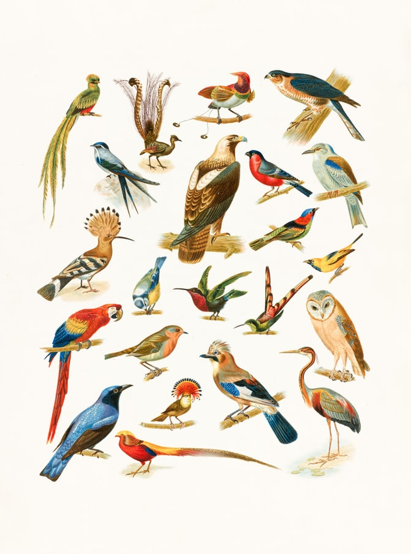

We will briefly study the Big5/MBTI Personality Test Matrix and understand the “dichotomies” these embody. We will then use these to understand ourselves, as we create some novel situations for ourselves in a Game.
On with the Games!!
Look at the slide full of numbers on the screen ( PPT is linked in the references below). I would like you to:
I have divided you up into 4 groups. Each group will be given a specific task. You will need to:
Here is the MBTI Test site: https://www.16personalities.com/free-personality-test
MBTI Game: PDF
In the Icebreaker Game, some of you would have difficulty trying to spot the pattern WITHOUT discussing with your friends!
Others would have perhaps frowned at the slightest whisper in the class, as they were concentrating!
In the Team Game, you might have realized that each of the 4 teams had members that were different in ONE of the MBTI characteristics! So I had pitted I vs E people; N vs S people; T vs F people, and J vs P people. The tasks allocated to each of you was precisely one to make that dichotomy surface in your discussions. And of course, the documentation of the discussions was far more important than the end results !! ;-D
So what have learnt then? From the two exercises, we see that: